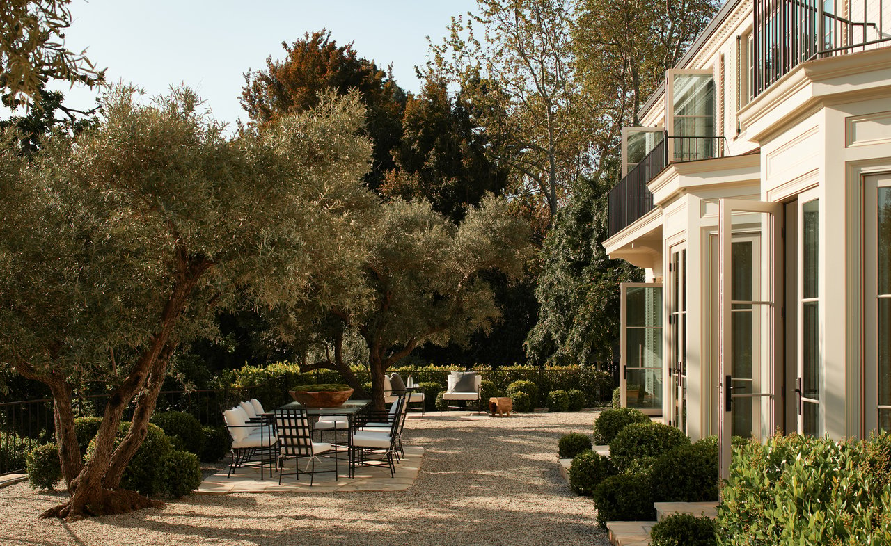

<section id="ns-services" aria-label="Find your next chapter">
  <div class="ns-carousel" role="region" aria-roledescription="carousel" aria-label="Buy, sell, and relocate" tabindex="0">
    <div class="ns-carousel-stage">
      <article class="ns-service-slide ns-previous" data-slide="0" aria-hidden="true" inert>
        
        <div class="ns-slide-shade"></div>
        <div class="ns-slide-content"><h2>Find Where You Belong.</h2><p>A neighborhood you love. A home that feels like you.<br>Let’s find your place in North Alabama.</p><a href="https://paulatisch.huntsvillehomes.homes/index.php?rtype=map">Start Your Search</a></div>
      </article>
      <article class="ns-service-slide ns-current" data-slide="1" aria-hidden="false">
        
        <div class="ns-slide-shade"></div>
        <div class="ns-slide-content"><h2>Sell With Confidence.</h2><p>From your first conversation to your next chapter,<br>we’re here to help you move forward.</p><a href="https://paulatisch.huntsvillehomes.homes/seller/valuation/">Start Selling</a></div>
      </article>
      <article class="ns-service-slide ns-next" data-slide="2" aria-hidden="true" inert>
        
        <div class="ns-slide-shade"></div>
        <div class="ns-slide-content"><h2>A Fresh Start. A Familiar Guide.</h2><p>Make North Alabama your next home.<br>Start with a local conversation.</p><a href="https://paulatisch.huntsvillehomes.homes/contact.php">Plan Your Move</a></div>
      </article>
    </div>
    <button class="ns-carousel-arrow ns-carousel-prev" type="button" aria-label="Previous slide"><svg viewBox="0 0 24 24" aria-hidden="true"><path d="m14 6-6 6 6 6"/></svg></button>
    <button class="ns-carousel-arrow ns-carousel-next" type="button" aria-label="Next slide"><svg viewBox="0 0 24 24" aria-hidden="true"><path d="m10 6 6 6-6 6"/></svg></button>
    <div class="ns-carousel-dots" aria-label="Choose a slide"><button type="button" data-index="0" aria-label="Show buying slide" aria-pressed="false"></button><button type="button" data-index="1" aria-label="Show selling slide" aria-pressed="true"></button><button type="button" data-index="2" aria-label="Show relocation slide" aria-pressed="false"></button></div>
    <span class="ns-carousel-status" aria-live="polite" aria-atomic="true">Slide 2 of 3: Sell With Confidence.</span>
  </div>
</section>
